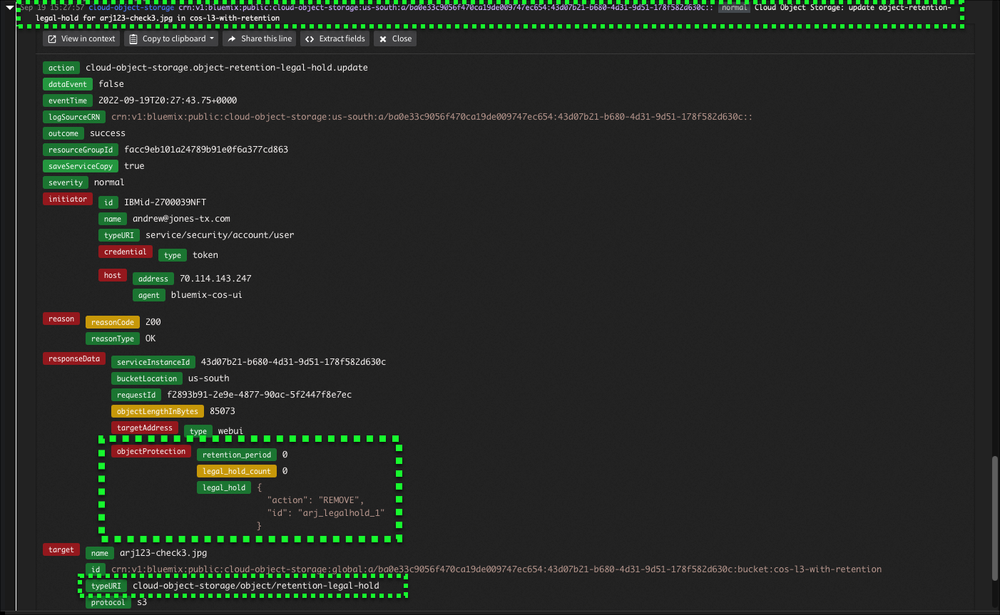

Legal holds
Another means to protect regulated date is through the use of Legal holds. Certain objects might need to be prevented from modification after a retention period expires. An example is an incomplete legal review, where records might need to be accessible for an extended duration beyond the retention period originally set. A legal hold flag can be applied at the object level. Legal holds can be applied to objects during initial uploads or after an object is written. Note: A maximum of 100 legal holds can be applied per object.
Follow the steps below to create a legal hold on an object. If not already open, open new browser tabs or windows to the IBM Cloud Portal COS bucket details and Activity Tracker as described in Steps 1 and 2 of the previous chapter.
- On the IBM Cloud Portal page, click the Upload button.
- Click the Upload files button.
- In the Choose Files to Upload dialog, select a file to upload to COS, and click Upload.
- Click the up arrow next to the Organize your objects (advanced) section of the Upload dialog.
- Set Duration to 0 Days.
- Enter a unique name in the Legal hold text entry field.
- Click Upload.
A Transfers dialog will open and after the file uploads, a success message will appear. Close these windows by clicking the X at top right of each.
Recall how in the last chapter it was possible to delete an object that had a retention period of 0 days. Now, try and delete the document just upload that has a retention of 0 days AND a legal hold.
- Select the newly uploaded document and click Delete objects.
- In the Delete object dialog, enter Permanently delete and click the Delete button.
Notice the Delete failed. An error message should have appeared stating the Delete failed due to an attached policy.
-
Switch to the Activity Tracker Dashboard.
-
Click to the left of the last delete object-batch event in the Dashboard.
The legal hold on the object prevents the object from being deleted even though the retention period is set to 0 days.
- Return to the IBM Cloud Portal, click on the last object added to view the object details page.
- Click the Retention tab.
- Click the Trash can icon to the right of the Legal hold created earlier.
- Click Delete in the Delete Legal Hold dialog.
The legal hold has now been removed. A new entry in Activity Tracker should reflect the object has been updated as shown in the image below

Now that the legal hold has been removed, the object can be deleted, as it's retention period is set to 0 days and there are no legal holds on the object.
Technical sellers should proceed to Part 8 and explore the COS command line interfaces (CLIs).
That concludes the required parts of the demonstration script for IBM and Business Partners Sales. All are encouraged to complete Parts 8 and 9, but at this time IBM and Business Partners Sales may skip to Next steps.